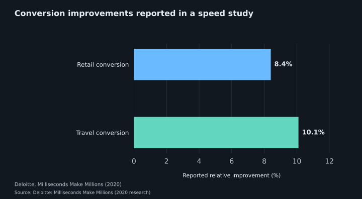

A website can feel quick during a quiet afternoon and struggle when a campaign sends customers to the same page. It can also earn a good laboratory score while visitors still experience slow interactions, unstable layouts, or a checkout that fails under pressure. Performance work becomes more useful when it follows the complete customer task.
Website performance includes loading, responsiveness, visual stability, server behavior, and the ability to complete work at the expected traffic level. Core Web Vitals provide important measurements of user experience, but they do not describe every operational requirement. A fast page that cannot save a booking still fails the business.
This guide explains the metrics, the evidence connecting speed and commercial behavior, and a practical plan for everyday and peak-period reliability. The technical recommendations and testing sequence are my analysis. Historical research illustrates a relationship worth investigating; it does not promise a particular conversion increase for your website.
What the commercial research supports
In its Milliseconds Make Millions study, Deloitte examined mobile site data over four weeks across retail, travel, luxury, and lead-generation brands in Europe and the United States. It reported retail conversion improvements of 8.4% and travel improvements of 10.1% associated with a 0.1-second natural site-speed improvement.

| Group or target | Value |
|---|---|
| Retail conversion | 8.4% |
| Travel conversion | 10.1% |
This is historical research published in 2020 and commissioned by Google. The reported improvements concern the studied brands and method. They are relative conversion improvements, not percentage-point changes, and they do not establish a universal return from shaving 0.1 seconds off one modern metric such as LCP.
The useful business lesson is to measure speed alongside the journey you want customers to finish. Your own results may depend on device mix, traffic quality, product demand, form design, and other changes. Treat the research as support for a testable hypothesis, then evaluate your implementation with appropriately scoped evidence.
Separate loading, interaction, and capacity
Loading concerns when content becomes available. Interaction concerns how the interface responds after someone acts. Capacity concerns how the system behaves as work increases. A project can improve one dimension while leaving another unchanged, so start by defining the problem rather than choosing an optimization technique.
A large hero image may delay the most prominent content. A complex script may make a menu slow after the page appears. A database query may become a bottleneck only when many customers search at once. Those problems require different investigation and different fixes.
Map the important journey into steps: landing page, product or service selection, form, payment where applicable, and confirmation. Identify which systems each step uses. This gives the team a way to connect a reported symptom with a plausible part of the architecture.
Avoid relying on a single headline score. Keep the underlying measurements, test conditions, and errors visible. A score can help summarize a tool's assessment, but a developer needs the actual delay or failure to decide what to change. A business owner needs to know which customer task the change is expected to improve.
Understand the three Core Web Vitals
Google's web.dev guidance defines Largest Contentful Paint as a loading metric, Interaction to Next Paint as a responsiveness metric, and Cumulative Layout Shift as a visual stability metric. The recommended good thresholds are LCP at 2.5 seconds or less, INP at 200 milliseconds or less, and CLS at 0.1 or less.
Assess these thresholds at the 75th percentile, segmented across mobile and desktop. A percentile describes a distribution, not the fastest visitor or the average. A good result for one device group does not establish that another group has the same experience.
LCP asks when the main visible content appears. INP considers responsiveness to interactions. CLS captures unexpected layout movement. Together they describe important aspects of experience, but they do not measure whether the information is correct, the form is understandable, or the payment reaches the business system.
Keep metric definitions with the report. Otherwise, a team can compare incompatible numbers or treat a single laboratory run as a statement about every visitor. The goal is a shared understanding of what the measurements describe so that design, engineering, and commercial teams can discuss the same problem.
Field data and laboratory tests serve different purposes
Field data reflects real visits under a range of devices, networks, and interactions. Laboratory testing creates a controlled environment that helps reproduce and diagnose problems. Both are useful. The mistake is assuming they answer exactly the same question.
A laboratory test can help identify a large resource, a rendering delay, or a script that blocks the main thread. It also makes before-and-after comparisons easier when the test conditions remain consistent. However, its network and device settings may not match the audience using the service.
Field data can reveal a problem affecting a particular page type or user segment. It may require sufficient traffic and an observation period, and aggregated data can hide important variations. Inspect the coverage and time window before drawing a conclusion from a report with sparse or missing information.
For a small site, start with repeatable laboratory checks and direct task testing, then add real-user measurement where appropriate. Report missing evidence honestly. Saying that a page lacks enough field data is more useful than assigning it a reassuring result based on measurements that do not exist.
Find the cause of slow main content
The web.dev LCP optimization guide breaks the loading problem into stages such as initial response, resource discovery, resource transfer, and rendering. That decomposition helps avoid spending time compressing an image when the main delay occurs before the browser requests it.
Inspect the actual largest content element on representative pages. It may be a hero image, a product image, or a text block. Check how the browser discovers it and whether important styles or scripts delay its display. Different templates can have different largest elements and different bottlenecks.
Use appropriately sized images and modern formats where supported. Provide dimensions so the browser can reserve space. Avoid sending a very large desktop asset to a small screen when a suitable responsive source would work. Keep the important visible image discoverable rather than hiding it behind unnecessary client-side logic.
Test changes together. A smaller file can still load late if it is discovered late. A faster response can still leave rendering blocked. Record which stage improved and whether the final customer-visible metric changed. This makes the investigation repeatable and gives the team a useful explanation of the result.
Make interactions responsive after the page loads
Google's INP explanation focuses on the delay between an interaction and the next visual update, including work on the browser's main thread. A page can finish its initial loading and still feel unresponsive when a user opens a filter or types into a complex form.
Observe the interactions that customers repeat. Search, navigation, variant selection, form progression, and checkout deserve attention. Use browser tools to identify long-running work and determine whether the interface performs unnecessary calculations or rendering after each input.
Break up heavy work where appropriate and avoid loading features before they are needed. Keep feedback timely and meaningful. A progress indicator can tell the user that an action started, but it should not conceal an operation that remains stuck indefinitely. Define the error and recovery behavior too.
Review third-party scripts alongside your own code. A chat widget or analytics tag can contribute work even if the application bundle is small. Each tool should have a business purpose that justifies its cost. Removing an unused dependency can simplify maintenance while also reducing the work the browser must perform.
Reserve space and reduce layout surprises
Unexpected movement can cause a visitor to lose their place or activate the wrong control. Reserve space for images, media, advertisements, and other content that loads later. Review fonts and dynamic messages as well as obvious image dimensions.
Inspect the page during loading and after interaction. A banner that appears above a form can move the field someone is using. A late-loading recommendation panel can shift a button. The problem may not appear in a screenshot taken after everything has settled.
Design status messages in a way that respects the surrounding task. If a validation error needs space, consider how the form should reveal it without leaving the user confused. If a consent notice appears, ensure that the page remains usable and that focus behavior makes sense.
Stability and accessibility often reinforce each other. Predictable placement and readable feedback help people use the page with different input methods and magnification. My website accessibility guide explains how to test those journeys more broadly, including keyboard navigation, labels, and error recovery.
Caching works best when you know what may be shared
Caching can reduce repeated work by reusing a result. Static assets and public pages often offer useful opportunities. Personalized content, account details, and changing transaction state require more careful rules because the wrong cached response can be stale or exposed to the wrong person.
Create a cache policy by content type and task. Decide which responses may be shared, how long they remain useful, and how changes invalidate them. Do not apply a blanket cache rule to an application simply because it improved the homepage in a quick test.
Test with more than one user role and account. A customer should not receive another customer's page or an outdated balance. Confirm the behavior of authentication cookies, cache keys, and private responses in the actual platform configuration. The details vary with the infrastructure and application.
Also examine the origin system. Caching can reduce load, but it does not automatically repair an inefficient database query or a slow external dependency. A good performance plan identifies where reuse helps and where the underlying operation still needs improvement. Keep the rules documented so a future feature does not accidentally violate the assumptions behind them.
Peak traffic needs a workload model
Begin capacity planning with expected actions, not just visitor count. Ten visitors reading a public page create different work from ten users uploading documents, searching a large catalog, or completing a payment. Describe the mix of actions and the rate at which they arrive.
Use available history to estimate normal and busy periods. For a new service, record assumptions and test a range. Avoid presenting an invented concurrency figure as a forecast. A campaign plan, event schedule, or previous sales period can provide a more useful starting point than a generic target copied from another business.
Include background work. Imports, exports, image processing, scheduled reports, and email jobs can compete for resources during a busy period. A test that exercises only public page views may miss the database or worker queue that actually constrains the service.
Set explicit acceptance conditions. The important journey completes within an agreed response range, errors remain within an agreed threshold, and the system recovers when load falls. These are project-specific goals to decide with the business. The test should report what happened, including any component that failed before the target workload was reached.
Run load tests in a controlled environment
Use an environment and services you are authorized to test. Choose realistic data volumes and a workload that resembles the application's main tasks. Coordinate with the hosting and external service arrangements so the test measures useful behavior without creating real customer transactions or unwanted messages.
Increase load gradually and observe several signals together: response time, error rate, throughput, resource use, database behavior, and queue depth. A stable average response can conceal a slow tail or a growing backlog. Watch the distribution and the work waiting behind the interface.
Test recovery after the load stops. Does the queue drain? Does memory return to an expected level? Can the application accept a new normal request? A system that survives the peak but remains degraded afterward still needs investigation.
Document the test conditions, version, infrastructure settings, and limits. The result applies to that configuration and workload. It cannot prove that the service will handle every possible campaign, attack, or unexpected behavior. Repeat the relevant checks after substantial changes rather than treating one successful exercise as a permanent capacity certificate.
Payments and background jobs need correctness under pressure
A customer-facing success page is not enough evidence that a payment reached the business records. Payment providers commonly use asynchronous events to confirm changes. The application needs to process them correctly even when deliveries repeat or arrive after a delay.
Stripe's webhook documentation describes event delivery and integration requirements. For a Stripe integration, follow its guidance on signature verification, duplicate handling, and event processing. Do not generalize one provider's timing or retry rules to every other payment service.
Keep slow background work outside the critical response where the architecture supports it. A durable queue can let the application acknowledge receipt and process the job separately. That still requires retry rules, an investigation path, and monitoring of work that remains pending.
At peak traffic, check correctness as well as speed. Count completed orders, duplicate actions, missing confirmations, and failed jobs. A faster response that loses records is not an improvement. My payment API reliability article explores why transaction state and reconciliation deserve attention alongside the visible checkout experience.
Build a business dashboard that preserves meaning
Choose a small set of measures connected to the task: successful form submissions, completed bookings, checkout completion, response time, and unresolved errors. Keep their definitions and observation windows visible. A dashboard becomes difficult to trust when each card uses a different denominator without explanation.
Segment where it affects decisions. Mobile and desktop, logged-in and public traffic, or a few important page templates can reveal differences hidden by a site-wide average. Avoid creating so many segments that a small site produces unstable numbers with no useful sample size.
Review the measurements with commercial context. A lower conversion rate during a broad awareness campaign may reflect different traffic intent. A revenue change may reflect pricing or stock availability. Performance improvements should receive credit where the evidence supports it, while other explanations remain visible.
Keep qualitative feedback in the same conversation. A customer reporting that the form froze can identify an issue before an aggregate metric becomes convincing. Combine that report with logs and reproducible steps. The best operational view helps the team decide what to investigate next rather than merely displaying more charts.
A release checklist for a busy period
Before a campaign or launch, confirm the expected traffic path and the pages likely to receive it. Test the main tasks on representative devices. Review image delivery, scripts, cache behavior, database constraints, and the integrations that complete the transaction.
Confirm backup and recovery arrangements, deployment ownership, and escalation contacts. Decide who can pause a release or disable an optional feature. Keep a known previous version available where rollback remains safe, and understand the consequences of any database changes.
During the event, monitor the journey and the infrastructure together. Watch for a growing queue or an increase in incomplete actions, even if the homepage remains available. Communicate accurately with the people handling customers so they know what alternatives to offer.
Afterward, compare expectations with observed behavior. Record the bottleneck, the useful alerts, and the work staff had to complete manually. This suggested checklist supports a practical review; it does not replace the application's own test plan. Use the findings to improve the next release and capacity estimate.
Review database work at the level of a task
A slow application endpoint may reflect a query, a chain of queries, or repeated calls that the interface triggers unnecessarily. Start with the user action and trace the work it creates. A catalog filter that issues several overlapping requests needs a different correction from a single query scanning a large table.
Use appropriate query analysis and production-safe observability to identify the expensive operation. Inspect the amount of data retrieved and whether the application requests fields it never uses. An index can help a relevant access pattern, but adding indexes without understanding writes, storage, and the query plan can create unnecessary cost.
Test with a representative data volume. An application that feels fast with a handful of records may behave differently after several years of orders or activity history. State the dataset size in the test report so the result has an understandable boundary.
Consider pagination and background processing where they fit the task. A staff member looking for one case should not need to download every case. A large export may work better as a queued job with a completion notification than as a request that keeps the browser waiting.
Finally, verify correctness after optimization. Compare selected records, totals, permissions, and ordering. A faster query that omits an important condition can produce the wrong answer. Performance changes should preserve the business meaning of the operation as well as improve its timing.
Make experiments reproducible enough to trust
Keep a compact experiment log for each significant improvement. Record the page or task, application version, device and network conditions, data volume, cache state, measurement tool, and observed result. This helps the team distinguish an actual improvement from a different testing environment.
Repeat a controlled test enough to see whether the result is stable, while recognizing that repeated laboratory runs still do not reproduce every real visitor. Compare distributions or representative ranges where the tooling supports them. Avoid choosing only the fastest run for the final report.
Change one major factor at a time when practical. If the team replaces images, removes scripts, changes hosting, and redesigns the page together, it may observe a better experience without knowing which change produced it. Sometimes a combined release is necessary; report that limitation rather than inventing a precise attribution.
Connect the experiment to a release decision. State which evidence supports publishing, which checks remain necessary, and how the team will detect a regression afterward. A successful local test is one piece of evidence, not the end of the operating process.
Use the same care in commercial reporting. Show the measured improvement and its conditions, then describe the customer benefit the team expects to investigate. This gives clients a concrete result they can assess while keeping claims proportionate to the evidence. It also creates a better starting point for the next performance investigation.
Questions about speed and capacity
Will a faster website automatically rank higher?
Performance contributes to user experience, but search visibility depends on many factors. Treat speed work as an improvement to the service and measure its effects. Avoid promising a particular ranking from a score or a single metric change.
Do we need more expensive hosting?
Investigate the bottleneck first. Oversized media, unnecessary scripts, inefficient queries, and unsuitable caching can create delays on powerful infrastructure too. Additional capacity helps when the evidence shows a resource constraint and the application can use that capacity effectively.
What should a small business do first?
Identify the main customer task, collect a repeatable baseline, and fix the largest evidenced problem. Verify the result on the same conditions and inspect the real journey. A focused improvement with clear evidence is more useful than a long list of untested optimizations.
Build a website ready for real customers
Good performance work connects the browser, the application, and the business process. It helps customers see information, interact confidently, and complete the task even when demand increases. The measurements should explain that experience and guide the next decision.
I help teams build and improve websites, applications, and integrations with practical testing and maintainable delivery. Explore my web development services, read about cloud hosting and recovery, or tell me which customer journey needs attention. We can establish a baseline, identify the limiting step, and build a focused improvement plan supported by evidence.
Sources and research notes
Primary publications and official documentation consulted for this guide. Research periods are stated beside the relevant claims and charts. Implementation checklists and worked examples represent my analysis; fictional examples are not client results. Reviewed 22 November 2026.